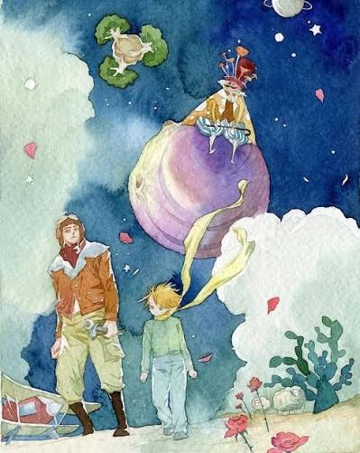
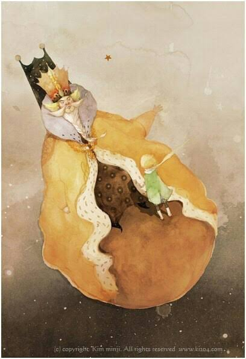
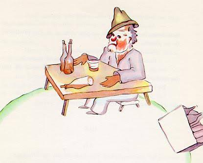
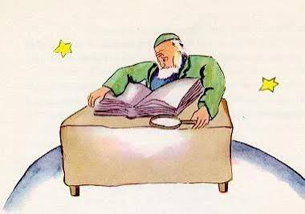

Power Obsession
The Monarch
Asteroid 325
The pointlessness of demanding absolute submission.
The characters encountered by the traveling prince serve as mirrors for the absurdities and vices of human behavior.

Asteroid 325
The pointlessness of demanding absolute submission.

Asteroid 326
Seeking superficial validation while ignoring true character.

Asteroid 328
The tragedy of treating life as a series of numbers and assets.

Asteroid 330
Accumulating theoretical data without ever exploring the world firsthand.
| Character | Asteroid | Flaw | Lesson |
|---|---|---|---|
| The Monarch | 325 | Power Obsession | The pointlessness of demanding absolute submission. |
| The Vain Man | 326 | Narcissism | Seeking superficial validation while ignoring true character. |
| The Merchant | 328 | Greed | The tragedy of treating life as a series of numbers and assets. |
| The Scholar | 330 | Academic Isolation | Accumulating theoretical data without ever exploring the world firsthand. |